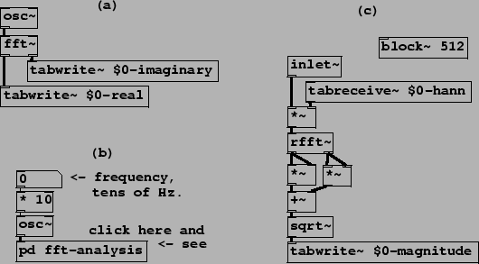
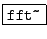
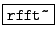
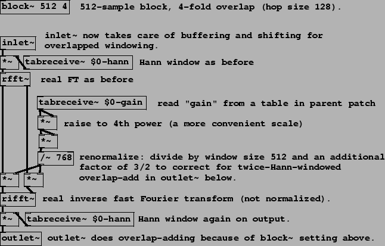
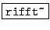
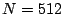

Example I01.Fourier.analysis.pd (Figure 9.14, part a) demonstrates computing the Fourier transform of an audio signal using the fft~ object:
|  |
:
Fast Fourier transform. The two inlets take audio signals representing the real
and imaginary parts of a complex-valued signal. The window size  is given
by Pd's block size. One Fourier transform is done on each block.
is given
by Pd's block size. One Fourier transform is done on each block.
The Fast Fourier transform [SI03] reduces the computational cost of
Fourier analysis in Pd to only that of between 5 and 15 osc~ objects in
typical configurations. The FFT algorithm in its simplest form takes  to
be a power of two, which is also (normally) a constraint on block sizes in Pd.
to
be a power of two, which is also (normally) a constraint on block sizes in Pd.
Example I02.Hann.window.pd (Figure 9.14, parts b and c) shows how to control the block size using a block~ object, how to apply a Hann window, and a different version of the Fourier transform. Part (b) shows the invocation of a subwindow which in turn is shown in part (c). New objects are:
:
real Fast Fourier transform. The imaginary part of the input is assumed to
be zero. Only the first  channels of output are filled in (the others
are determined by symmetry). This takes half the computation time of the
(more general) fft~object.
channels of output are filled in (the others
are determined by symmetry). This takes half the computation time of the
(more general) fft~object.
:
repeatedly outputs the contents of a wavetable. Each
block of computation outputs the same first  samples of the table.
samples of the table.
In this example, the table ``$0-hann" holds a Hann window function of length 512, in agreement with the specified block size. The signal to be analyzed appears (from the parent patch) via the inlet~ object. The channel amplitudes (the output of the rfft~ object) are reduced to real-valued magnitudes: the real and imaginary parts are squared separately, the two squares are added, and the result passed to the sqrt~ object. Finally the magnitude is written (controlled by a connection not shown in the figure) via tabwrite~ to another table, ``$0-magnitude", for graphing.
|  |
Example I03.resynthesis.pd (Figure 9.15) shows how to analyze and resynthesize an audio signal following the strategy of Figure 9.7. As before there is a sub-window to do the work at a block size appropriate to the task; the figure shows only the sub-window. We need one new object for the inverse Fourier transform:
:
real inverse Fast Fourier transform. Using the first  points of its
inputs (taken to be a real/imaginary pair), and assuming the appropriate values
for the other channels by symmetry, reconstructs a real-valued output. No
normalization is done, so that a rfft~/rifft~ pair together
result in a gain of
points of its
inputs (taken to be a real/imaginary pair), and assuming the appropriate values
for the other channels by symmetry, reconstructs a real-valued output. No
normalization is done, so that a rfft~/rifft~ pair together
result in a gain of  . The ifft~ object is also available
which computes an unnormalized inverse for the fft~ object,
reconstructing a complex-valued output.
. The ifft~ object is also available
which computes an unnormalized inverse for the fft~ object,
reconstructing a complex-valued output.
The block~ object, in the subwindow, is invoked with a second argument which specifies an overlap factor of 4. This dictates that the sub-window will run four times every  samples, at regular intervals of 128 samples. The inlet~ object does the necessary buffering and rearranging of samples so that its output always gives the 512 latest samples of input in order. In the other direction, the outlet~ object adds segments of its previous four inputs to carry out the overlap-add scheme shown in Figure 9.7.
The 512-sample blocks are multiplied by the Hann window both at the input and the output. If the rfft~ and rifft~ objects were connected without any modifications in between, the output would faithfully reconstruct the input.
A modification is applied, however: each channel is multiplied by a (positive real-valued) gain. The complex-valued amplitude for each channel is scaled by separately multiplying the real and imaginary parts by the gain. The gain (which depends on the channel) comes from another table, named ``$0-gain". The result is a graphical equalization filter; by mousing in the graphical window for this table, you can design gain-frequency curves.
There is an inherent delay introduced by using block~ to increase the block size (but none if it is used, as shown in Chapter 7, to reduce block size relative to the parent window.) The delay can be measured from the inlet to the outlet of the sub-patch, and is equal to the difference of the two block sizes. In this example the buffering delay is 512-64=448 samples. Blocking delay does not depend on overlap, only on block sizes.